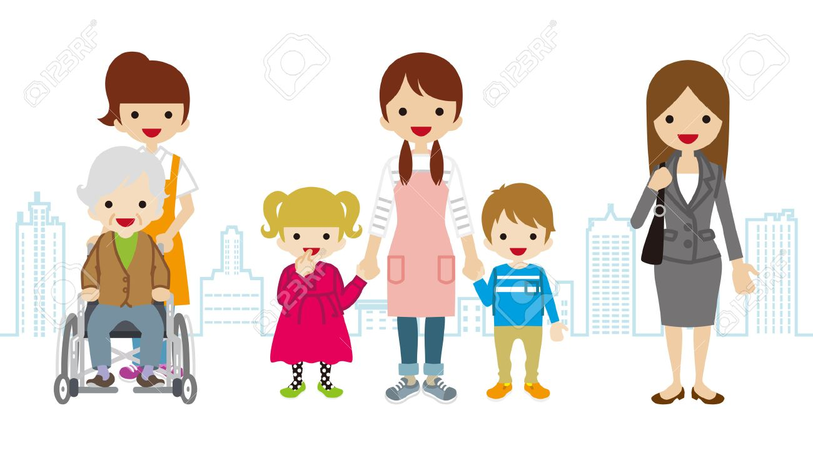

<nav class="navbar navbar-expand-lg navbar-light shadow">   
    <a class="navbar-brand">ChildCare</a> 

    <div ngbDropdown>
      <svg _ngcontent-gkc-c111="" aria-haspopup="true" id="dropdownManual" ngbDropdownAnchor="" width="1em" height="1em" viewBox="0 0 16 16" id="dropdownConfig" ngbDropdownToggle fill="currentColor" xmlns="http://www.w3.org/2000/svg" class="dropdown-toggle bi bi-three-dots-vertical" aria-expanded="false"><path _ngcontent-gkc-c111="" fill-rule="evenodd" d="M9.5 13a1.5 1.5 0 11-3 0 1.5 1.5 0 013 0zm0-5a1.5 1.5 0 11-3 0 1.5 1.5 0 013 0zm0-5a1.5 1.5 0 11-3 0 1.5 1.5 0 013 0z" clip-rule="evenodd"></path></svg>
      <div style="right: 0px !important;left: unset;" ngbDropdownMenu aria-labelledby="dropdownConfig">
        <button routerLink="/educator/update-educator/{{auth.getUid()}}" ngbDropdownItem>Profile</button>
        <button (click)="logout()" ngbDropdownItem>logout</button>
      </div>
    </div>
</nav>
<div *ngIf="rla1.isActive==true" class="text-center">
  <h2 class="py-5"> Welcome to Child Care Platform</h2> 
  
</div>  
<router-outlet></router-outlet>
<div class="card fixed-bottom shadow-sm">    
  <div class="d-flex flex-row bd-highlight text-center borderless">
      <div class="p-2 flex-grow-1 bd-highlight" routerLink="/educator" [routerLinkActiveOptions]="{exact:
          true}" routerLinkActive #rla1="routerLinkActive">            
          <svg [ngClass]="{'active':rla1.isActive}" class="bi bi-house-door-fill" width="1em" height="1em" viewBox="0 0 16 16" fill="currentColor" xmlns="http://www.w3.org/2000/svg">
              <path d="M6.5 10.995V14.5a.5.5 0 01-.5.5H2a.5.5 0 01-.5-.5v-7a.5.5 0 01.146-.354l6-6a.5.5 0 01.708 0l6 6a.5.5 0 01.146.354v7a.5.5 0 01-.5.5h-4a.5.5 0 01-.5-.5V11c0-.25-.25-.5-.5-.5H7c-.25 0-.5.25-.5.495z"/>
              <path fill-rule="evenodd" d="M13 2.5V6l-2-2V2.5a.5.5 0 01.5-.5h1a.5.5 0 01.5.5z" clip-rule="evenodd"/>
            </svg>            
          <br>
          Home
      </div>
<!--       <div  class="p-2 flex-grow-1 bd-highlight" [routerLinkActiveOptions]="{exact:
          true}" routerLinkActive #rla2="routerLinkActive">            
          <svg  [ngClass]="{'active':rla2.isActive}"  class="bi bi-people-fill" width="1em" height="1em" viewBox="0 0 16 16" fill="currentColor" xmlns="http://www.w3.org/2000/svg">
              <path fill-rule="evenodd" d="M7 14s-1 0-1-1 1-4 5-4 5 3 5 4-1 1-1 1H7zm4-6a3 3 0 100-6 3 3 0 000 6zm-5.784 6A2.238 2.238 0 015 13c0-1.355.68-2.75 1.936-3.72A6.325 6.325 0 005 9c-4 0-5 3-5 4s1 1 1 1h4.216zM4.5 8a2.5 2.5 0 100-5 2.5 2.5 0 000 5z" clip-rule="evenodd"/>
            </svg> <br>
          Observations
      </div> -->
      <div class="p-2 flex-grow-1 bd-highlight" routerLink="/educator/manage-student/{{auth.getUid()}}" [routerLinkActiveOptions]="{exact:
          true}" routerLinkActive #rla3="routerLinkActive">            
          <svg  [ngClass]="{'active':rla3.isActive}"  class="bi bi-x-diamond" width="1em" height="1em" viewBox="0 0 16 16" fill="currentColor" xmlns="http://www.w3.org/2000/svg">
              <path fill-rule="evenodd" d="M6.95.435c.58-.58 1.52-.58 2.1 0l6.515 6.516c.58.58.58 1.519 0 2.098L9.05 15.565c-.58.58-1.519.58-2.098 0L.435 9.05a1.482 1.482 0 010-2.098L6.95.435zm1.4.7a.495.495 0 00-.7 0L1.134 7.65a.495.495 0 000 .7l6.516 6.516a.495.495 0 00.7 0l6.516-6.516a.495.495 0 000-.7L8.35 1.134z" clip-rule="evenodd"/>
              <path fill-rule="evenodd" d="M11.854 4.146a.5.5 0 010 .708l-7 7a.5.5 0 01-.708-.708l7-7a.5.5 0 01.708 0z" clip-rule="evenodd"/>
              <path fill-rule="evenodd" d="M4.146 4.146a.5.5 0 000 .708l7 7a.5.5 0 00.708-.708l-7-7a.5.5 0 00-.708 0z" clip-rule="evenodd"/>
            </svg> <br>
         Children
      </div>        
    </div>    
</div>

